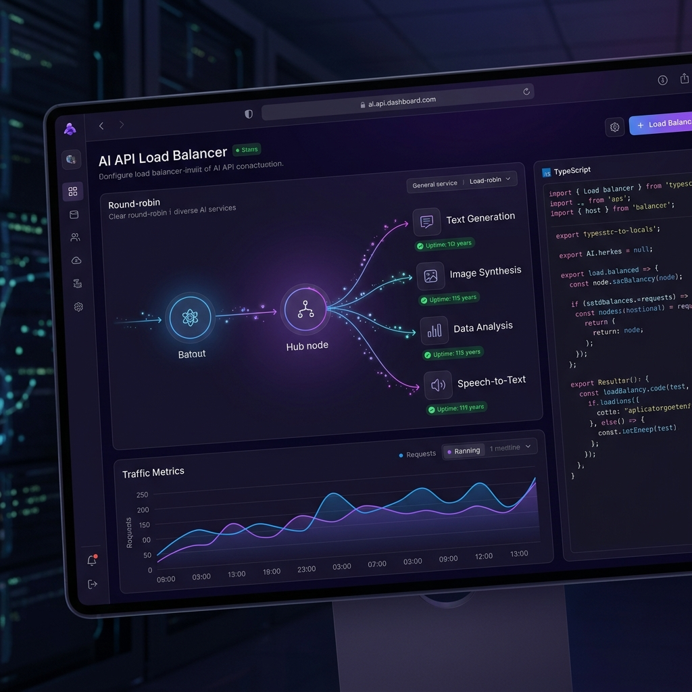

⭐ Proyecto Ancla
API-IA-FREE — Proxy Inteligente de IA
API proxy de alta disponibilidad con sistema Round-Robin para distribuir carga entre múltiples IAs gratuitas. Incluye sistema de fallback automático ante caídas, asegurando 99.9% de uptime sin costo de API.
- ✅ Balanceo de carga entre N proveedores de IA
- ✅ Fallback automático ante errores o rate limits
- ✅ Interfaz unificada para cualquier cliente